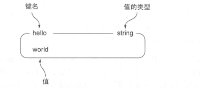
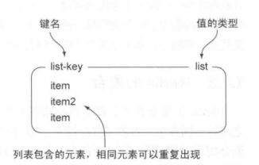
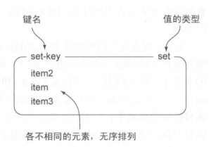
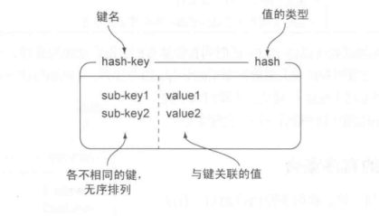
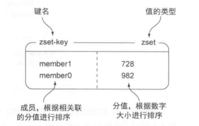
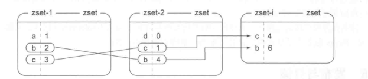
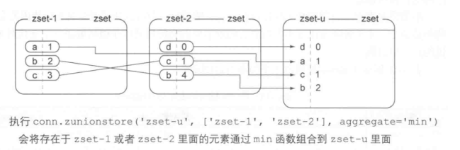
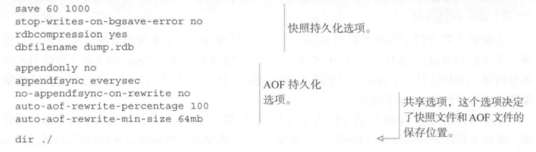
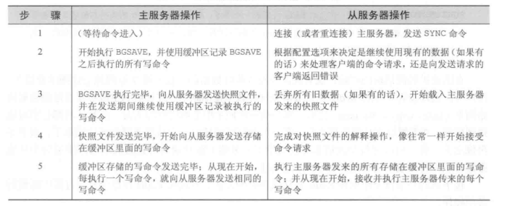
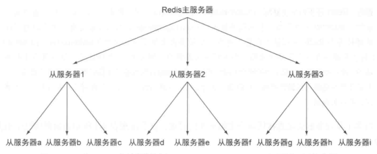

本文介绍redis的基础，包括redis的数据结构，发布订阅，事务，数据持久化，主从结构等内容。
本文是学习《redis实战》整理的博客。
数据结构
redis存储的本身就是key:value形式的数据，所说的数据结构，指的是value的结构。
字符串
结构
key: string

操作
- 基本操作
| 命令 | 行为 | 使用 |
|---|---|---|
| set | 设置存储在给定key中的值 | set name sun |
| get | 获取存储在给定key中的值 | get name |
| del | 删除存储在给定key中的值 | del name |
- 数值操作
其实这个不应该说字符串，因为它的value值可以是数值，包括整数与浮点数。
| 命令 | 行为 | 使用 |
|---|---|---|
| incr | 将键对应的值+1 | incr age |
| decr | 将键对应的值-1 | decr age |
| incrby | 将键对应值+amount | incrby age 10 |
| decrby | 将键对应值-amount | decrby age 10 |
| incrbyfloat | 将键对应值加浮点amount | incrbyfloat height 5.6 |
对一个不存在的键或者一个保存了空串的键执行自增或者自减操作，那么redis在执行操作时，会将这个键的值当作0来处理。如果对无法转换成数值的字符串进行操作，那么返回一个错误。
- 字串操作
| 命令 | 行为 | 使用 |
|---|---|---|
| append | 将value追加给定键的值的末尾 | append key value |
| getrange | 获取一个由偏移量start-end的字串 | getrange key start end |
| setrange | 将从offset偏移量设置为定值 | setrange key offset value |
| getbit | 将字符串堪称二进制位串，返回offset的二进制 | getbit key offset |
| setbit | 将offset的二进制设为value | setbit key offset value |
| bitcount | 统计二进制位串中1的数量 | bitcount key [start end] |
| bitop | 按位操作，包括and/or/xor/not | bitop operation dest-key key-name |
个人而言这些操作并没有什么用
列表
结构
key：list

这个列表可以认为是双向的队列，左边与右边都能push与pop
操作
- 基本操作
| 命令 | 行为 | 使用 |
|---|---|---|
| rpush | 将value推入列表右端 | rpush students wang |
| lpush | 将value推入列表的左端 | lpush students liu |
| rpop | 从右端弹出一个值，并返回此值 | rpop students |
| lpop | 从左端弹出一个值，并返回此值 | lpop students |
| lrange | 从左端切片 | lrange students 0 -1 |
| lindex | 左端的下标操作 | lindex students 1 |
| ltrim | 对列表进行剪裁，只保留start-end | ltrim students 2 -1 |
- 阻塞操作
| 命令 | 行为 | 使用 |
|---|---|---|
| blpop | 从第一个非空类表中弹出元素，或者为空在timeout内阻塞 | blpop key1 [key2…] timeout |
| brpop | 右端的阻塞pop | brpop key1 [key2..] timeout |
| rpoplpush | 从source-key列表弹出元素，然后推入dest-key的左端 | rpoplpush source-key dest-key |
| brpoplpush | 阻塞的brpoplbush | brpoplpush source-key dest-key timeout |
集合
结构
key: set

操作
- 基本操作
| 命令 | 行为 | 使用 |
|---|---|---|
| sadd | 往集合中添加元素 | sadd family father |
| smembers | 返回所有元素 | smembers family |
| sismember | 检测给定元素是否在集合中 | sismember family mother |
| srem | 如果元素在，则移除 | srem family thief |
| scard | 返回集合包括的元素数量 | scard family |
| srandmember | 从集合中随机返回一个或多个元素 | srandmember key [count] |
| spop | 随机移除一个元素，并返回 | spop key |
| smove | 如果一个移动到另一个 | smove source-key dest-key item |
- 集合操作
| 命令 | 行为 | 使用 |
|---|---|---|
| sinter | 两个集合取交集 | sinter family1 family2 |
| sunion | 两个集合取并集 | sunion family1 family2 |
| sdiff | 两个集合取差集 | sdiff family1 family2 |
| sinterstore | 交集然后存储到另一集合 | sinterstore dest-key key1 [key2..] |
| sunionstore | 并集然后转存到另一集合 | suninstore dest-key key1 [key2..] |
| sdiffstore | 差集然后转存到另一集合 | sdiffstore dest-key key1 [key2..] |
散列
结构
key：hash(Map)

散列类型其实就是字典类型
操作
- 基本操作
| 命令 | 行为 | 使用 |
|---|---|---|
| hset | 添加键值对 | hset family father yanfeng |
| hget | 获取指定键的值 | hget family father |
| hgetall | 获取所有键值对 | hgetall family |
| hdel | 如果键存在则删除 | hdel family father |
| hlen | 返回键值对数量 | hlen key |
- 其他操作
| 命令 | 行为 | 使用 |
|---|---|---|
| hexists | 检查键是否存在 | hexists family father |
| hkeys | 获取散列包含的所有键 | hkeys family |
| hvals | 获取散列包含的所有值 | kvals family |
| hincrby | 与incrby类似 | hincrby course english 10 |
| hincrbyfloat | 与incrbyfloat类似 | hincrbyfloat height wang 5.4 |
有序集合
结构
key: zset

有序集合是一种特殊的散列，它能通过value值排序
操作
- 基本操作
| 命令 | 行为 | 使用 |
|---|---|---|
| zadd | 将给定分值的成员添加到有序集合 | zadd enScore 98 sun [96 wang] |
| zrem | 如果元素存在则删除 | zrem enScore sun [wang] |
| zincrby | 同incrby | zincry enScore 1 sun |
| zrange | 切片 | zrange enScore 0 -1 [withscores] |
| zrangebyscore | 获取在给定分值范围内的所有元素 | zrangebyscore enScore 90 100 [withsores] |
| zcount | 获取在给定分值范围内的元素数量 | zcount enScore 90 100 |
| zcard | 返回包含的元素数量 | zcard enScore |
| zscore | 返回member的分数 | zrank enScore sun |
| zrank | 返回成员的排名 | zrank enScore sun |
- 其他操作
| 命令 | 行为 | 使用 |
|---|---|---|
| zrevrank | 返回成员member的排名，由大到小 | zrevrank enScore sun |
| zrevrange | 同zrange,由大到小 | zrevrange enScore 0 -1 [withscores] |
| zrevrangebyscore | 同zrangebyscore，由大到小 | zrevrangebyscore enScore 90 100 [with scores] |
| zremrangebyrank | 移除排名start-end间元素 | zremrangebyrank enScore 10 20 |
| zremrangebyscore | 移除分值介于min-max间的元素 | zremrangebyscore enScore 90 100 |
| zinterstore | 同sinterstore，执行的是+ | zinterstore dest-key key1 [key2..] |
| zunionstore | 同sunionstore，执行的是min | zunionstore dest-key key1 [key2..] |
zinterstore

zuninstore

键的过期时间
| 命令 | 示例 | 描述 |
|---|---|---|
| expire | expire key seconds | 让键在指定seconds秒后过期 |
| expireat | expireat key timestamp | 让键在指定时间戳过期 |
| pexpire | pexpire key milliseconds | 让键在指定milliseconds毫秒后过期 |
| pexpireat | pexpireat key timestamp | 让键在指定的毫秒级时间戳上过期 |
| ttl | ttl key | 查看给定键距离过期还有多少秒 |
| pttl | pttl key | 查看给定键距离过期时间有多少毫秒 |
发布订阅
发送者向频道发送二进制字符串消息。每当有消息被发送至频道时，频道的所有订阅者都会收到消息。
使用上发布订阅用于在不同进程之间传递数据。
基础命令
| 命令 | 用例 | 描述 |
|---|---|---|
| SUBSCRIBE | SUBSCRIBE CHANNEL1 [CHANNEL2] | 订阅给定的一个或多个频道 |
| UNSUBSCRIBE | UNSUBSCRIBE [CHANNEL1 [CHANNEL2]] | 退订给定频道或全部频道 |
| PSUBSCIBE | PSUBSCIBE PATTERN1 [PATTERN2] | 订阅与模式匹配的所有频道 |
| punsubscibe | punsubscibe pattern1 [pattern2] | 退订与模式匹配的所有频道 |
| publish | publish channel message | 向给定频道发送消息 |
问题
发布订阅会存在2个问题:
redis系统的稳定性
如果客户端订阅某个频道,但读取消息的速度很慢,那么会使redis输出缓冲区越来越大,这导致redis数度变慢,甚至直接崩溃.
此问题与redis版本有关,新版本会控制输出缓冲区的大小,过慢就会断开订阅数据传输的可靠性
客户端在执行订阅操作的过程中断线,会使其丢失在断线期间的所有消息.
这个会可以在后边去处理.
事务
multi/exec
和关系数据库那种可以在执行过程中进行回滚的事物不同.在Redis中，被multi和exec命令包围的所有命令会一个接一个执行，直到所有命令都执行完毕为止。直到一个事务执行完毕之后，Redis才会处理其他客户端的命令。
当Redis从一个客户端接受到multi命令时，Reis会将这个客户端之后发送的所有命令都放到一个队列中，直到这个客户端发送exec命令为止，然后redis在不被打断的情况下，一个接一个的执行队列中的命令。
数据持久化
简介
redis提供了两种不同的持久化方法。
一种叫快照(snapshotting)，它可以将存在于某一时刻的所有数据都写到硬盘里。
另一种叫追加(append-only file)AOF,它会在执行命令写命令时，将被执行的写命令复制到硬盘里。（类似与oracle的重写日志）
持久化一方面可以防止系统而将数据备份到另一个远程位置，另一方面也是将长时间运算的结果保留下来（类似与spark的图运算）

快照
快照存储位置
快照被写入DBFILENAME选项指定的文件里，并存在DIR选项指定的路径上。创建快照方法
客户端可以向REDIS发送BGSAVE命令来创建一个快照。
REDIS会调用FORK来创建一个子进程，负责将快照写入硬盘，而父进程继续处理命令【所有WINDOWS不支持】客户端可以向REDIS发送SAVE命令来创建快照。
REDIS服务接到SAVE命令在快照创建完毕之前，不再相应其他命令，也就是单线程完成的。设置了SAVE选项
SAVE 60 10000。从REDIS最近一次创建快照开始算，当满足60秒内有10000次写入，REDIS自动触发BGSAVE关闭
当REDIS通过SHUTDOWN命令接收到关闭服务器的请求时，或者TERM信号时，会执行一个SAVE命令。同步
当一个REDIS服务连接到另一个REDIS服务，并向对方发送SYNC命令开始一次复制操作的时候
AOF
APPENDONLY
通过将APPENDONLY YES选项来打开，简单说AOF持久化会将被执行的写命令写到AOF文件末尾，以此来记录数据发生的变化。因此，REDIS只要从头到尾执行一次AOF文件所包括的写命令，就可以恢复。APPENDFSYNC配置
| 选项 | 同步频率 |
| - | -: |
| ALWAYS | 每个写命令都立即写入硬盘 |
| EVERYSEC | 每秒执行一次写 |
| NO | 让操作系统来决定何时写 |对应NO选项，如果磁盘处理写的操作不快，当缓冲区被顶戴写入硬盘的数据填满时，REDIS写操作会被阻塞，并导致REDIS处理命令请求速度变慢。一般不用NO
BGREWRITEAOF
对于AOF，一些情况下AOF文件会不断的增大，这时，用户可以向REDIS发送BGREWRITEAOF命令。这个命令会通过移除AOF文件中冗余命令来重写AOF，以减小它。
BGREWRITEAOF原理跟BGSAVE类似：REDIS会创建一个子进程，然后有子进程负责AOF文件的重写。
可以通过AUTO-AOF-REWRITE-PERCENTAGE选项与AUTO-AOF-REWRITE-MIN-SIZE选项来自动执行BGREWRITEAOF。例如设置AUTO-AOF-REWRITE-PERCENTAGE 100 AUTO-AOF-REWITE-MIN-SIZE 64M当AOF文件的大于64MB并且AOF的体积比上一次重写之后的体积大至少（100%）1倍时候，REDIS执行。
集群结构
简介
关系型数据库通常会使用一个主服务器向多个从服务器发送更新，并使用从服务器来处理所有读请求，来增加扩展。redis也采用相同的方法来实现自己的复制特性，并作为扩展性能的一种手段。
主辅同步
开启
开启从服务的必须选项只有slaveof一个。当redis服务启动时，指定一个包括slaveof host port选项的配置，那么redis会根据配置来连接主服务器。
对已一个正财运行的redis服务器，可以通过发送SLAVEOF no one /SLAVEOF host port来终止或者开启从服务。过程

从服务在进行同步时，会清空自己的所有数据。
redis不支持主主复制
树形结构
主从链
主服务和从服务并没有特别不同之处，所以从服务也可以拥有自己的从服务，并由此形成了主从链。
检验硬盘写入
为了验证主服务是否已经将写数据发送到从服务，用户需要向主服务写入真正数据之后，再向主服务写入一个唯一的虚构值（哨兵），然后通过检查虚构值是否存在来判断写数据是否已经到达从服务。
检查数据是否保存到硬盘要困难多。检查info命令的输出结果中aof_pending_bio_fsync属性的值是否为0，如果是，则表明服务器已经将所有已知数据保存到硬盘上了。